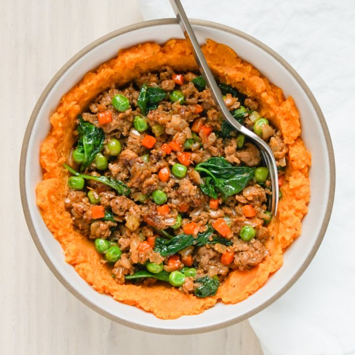

Upside-Down Beef "Cottage Pie" with Spinach, Peas & Sweet Potato Mash

Nutrition (per serving)
675.1 kcalCalories
38.3 gProtein
50.7 gCarbs
35.4 gFat
Full nutrition table
| Calories | 675.1 kcal |
| Total fat | 35.4 g |
| Saturated fat | 11.2 g |
| Trans fat | 1.5 g |
| Cholesterol | 115.7 mg |
| Sodium | 312.1 mg |
| Carbohydrates | 50.7 g |
| Fiber | 9.8 g |
| Sugars | 13.8 g |
| Protein | 38.3 g |
| Potassium | 1568.2 mg |
| Calcium | 158 mg |
| Iron | 6.5 mg |
| Vitamin A | 24258.9 IU |
| Vitamin C | 27.1 mg |
| Vitamin D | 5.1 IU |
Cookware
Ingredients
- 1 (5 oz) pkgbaby spinach
- 2 mediumcarrots
- 2 stickscelery
- 1 cupfrozen peas
- 2 clovesgarlic
- 1 ½ lblean ground beef
- 1 ½ lbsweet potatoes
- 2 mediumyellow onions
- balsamic vinegar
- black pepper
- extra virgin olive oil
- nutmeg, ground
- salt
Steps
- Wash and dry the fresh produce. (Skip the spinach if it came pre-washed.)1 ½ lb sweet potatoes
2 medium carrots
2 sticks celery
1 (5 oz) pkg baby spinach - Peel and medium dice sweet potatoes. Place in a medium saucepan, cover with hot water (from the tap), and bring to a boil over high heat.
- Once the liquid in the saucepan is boiling, reduce heat to medium, cover, and simmer until sweet potatoes are tender, about 10 minutes.
- Meanwhile, peel, halve, and small dice onions.2 medium yellow onions
- Preheat a large skillet over medium-high heat.
- Once the skillet is hot, add oil and swirl to coat the bottom. Add the onion and salt; cook, stirring occasionally until softened, about 5 minutes.4 tsp extra virgin olive oil
⅛ tsp salt - While the onion is cooking, peel, trim, and small dice carrots. Trim and small dice celery.
- Once the onion is soft, add the carrot and celery. Cook, stirring occasionally, until tender, 2-3 minutes.
- While the veggies are cooking, peel and mince garlic.2 cloves garlic
- Add garlic, beef, and spices to the skillet. Cook, breaking the meat apart with a spoon, until the beef is browned and crumbly, 5-6 minutes.1 ½ lb lean ground beef
1 tsp salt
½ tsp black pepper
⅛ tsp nutmeg, ground - When the sweet potatoes are done, drain and return to the pan. Add oil and spices; using a potato masher, mash until smooth. Cover to keep warm and set aside.4 tsp extra virgin olive oil
½ tsp salt
½ tsp black pepper
½ tsp nutmeg, ground - When the beef is done, add peas and vinegar to the skillet. Stir to combine.1 cup frozen peas
4 tsp balsamic vinegar - Add spinach to the skillet in handfuls, waiting for the spinach to wilt slightly before adding the next handful. Stir to combine, and continue to cook until peas are warmed through, 1 minute more. Remove from heat.
- To serve, divide sweet potato mash between plates or bowls; top with beef-veggie filling. Enjoy!